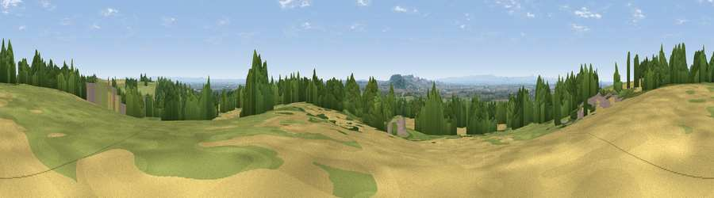

Viewpoint near Tarporley
#26686 in England · top 65% of its area beats it · near Tarporley · path 150 mWhere it is
The exact computed spot (SJ 55575 63725). Click the marker for map links.
Public access: the nearest public right of way is about 150 m away — the final stretch may cross private land. Computed from Natural England's CRoW access layer and OpenStreetMap rights of way — not the legal definitive map. Always verify locally.
The view, rendered

A 360° render of this exact spot computed from the terrain model, tree cover and land cover — summer colours, afternoon light, calibrated against photographs of famous viewpoints. Real trees, hedges and buildings will differ in detail.
The panorama
Grey silhouette: terrain skyline in each direction (720 bearings, Earth curvature and refraction included). Dashed green: skyline with trees (+15 m) and buildings (+8 m) as obstacles. Blue strip: how far the ground is visible on each bearing.
Where the view opens
Wedge length = distance to the farthest visible ground on that bearing (vegetation-aware). Rings at 10, 25 and 50 km.
What fills the view
45% grassland · 28% woodland · 24% cropland · 3% built-up
Angular shares of the visible panorama (visual magnitude), not map area. Landscape diversity 0.51 (0–1 Shannon).
Key numbers
More beautiful places nearby
The staircase of upgrades: each row has a higher view potential than everything closer. Driving times are estimates from straight-line distance, calibrated against real road routing — check an actual route before setting out.
| Place | Direction | Drive | Score |
|---|---|---|---|
| Viewpoint near Tarporley | NW · 0 km | ~1 min | 67.3 |
| Viewpoint near Utkinton | NNW · 2 km | ~6 min | 68.1 |
| Beeston Crag | SSW · 5 km | ~11 min | 74.4 |
| Viewpoint near Burwardsley | SSW · 7 km | ~14 min | 74.6 |
| Viewpoint near Bulkeley | SSW · 9 km | ~18 min | 76.8 |
| Viewpoint near Harthill | SSW · 10 km | ~19 min | 80.5 |
| White Brow | NNE · 50 km | ~71 min | 82.9 |
| Viewpoint near Little Wenlock | S · 56 km | ~78 min | 84.2 |
53.16877, -2.66600 · source: screening · position refined by local search. Computed location — check access rights before visiting.